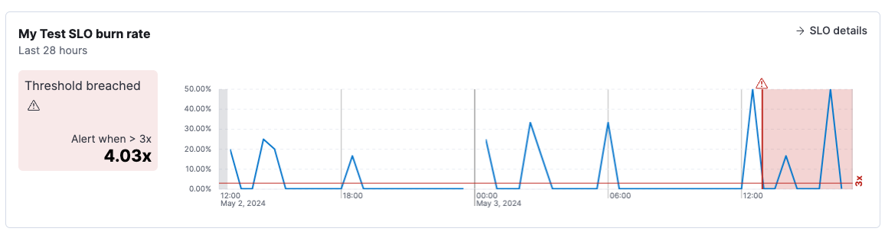

Triage SLO burn rate breaches
editSLO burn rate breaches occur when the percentage of bad events over a specified time period exceeds the threshold set in your SLO burn rate rule. When this happens, you are at risk of exhausting your error budget and violating your SLO.
To triage issues quickly, go to the alert details page:
- In your Observability project, go to Alerts (or open the SLO and click Alerts.)
-
From the Alerts table, click the
 icon next to the alert and select View alert details.
icon next to the alert and select View alert details.
The alert details page shows information about the alert, including when the alert was triggered, the duration of the alert, the source SLO, and the rule that triggered the alert. You can follow the links to navigate to the source SLO or rule definition.
Explore charts on the page to learn more about the SLO breach:
-
Burn rate chart. The first chart shows the burn rate during the time range when the alert was active. The line indicates how close the SLO came to breaching the threshold.
The timeline is annotated to show when the threshold was breached. You can hover over an alert icon to see the timestamp of the alert.
-
Alerts history chart. The next chart provides information about alerts for the same rule and group over the last 30 days. It shows the number of those alerts that were triggered per day, the total number of alerts triggered throughout the 30 days, and the average time it took to recover after a breach.
The number, duration, and frequency of these breaches over time gives you an indication of how severely the service is degrading so that you can focus on high severity issues first.
The contents of the alert details page may vary depending on the type of SLI that’s defined in the SLO.
After investigating the alert, you may want to:
- Click Snooze the rule to snooze notifications for a specific time period or indefinitely.
-
Click the
 icon and select Add to case to add the alert to a new or existing case. To learn more, refer to Cases.
icon and select Add to case to add the alert to a new or existing case. To learn more, refer to Cases.
-
Click the icon and select Mark as untracked.
When an alert is marked as untracked, actions are no longer generated.
You can choose to move active alerts to this state when you disable or delete rules.